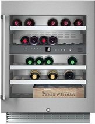
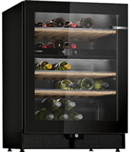
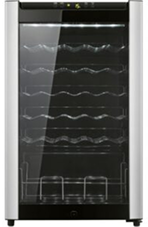
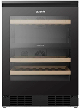
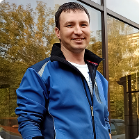

- 15% Скидка на ремонт винных шкафов!
До конца акции осталось:
Ремонт винных шкафов и холодильников
в Москве и области
- Выезд и диагностика БЕСПЛАТНО
- Лучшие оригинальные комплектующие
- Работаем без выходных
- Гарантия на работы до 36 месяцев
- Квалифицированная консультация по телефону
Отремонтируем любой винный шкаф в день обращения

Ремонт винных шкафов Gaggenau
Ремонт винных шкафов Bosch
Ремонт винных шкафов Samsung
Ремонт винных шкафов GorenjeВинные холодильники оборудованы специальными термостатами, регуляторами влажности, а также системами поглощения вибрации. Крайне важно, чтобы винный шкаф стабильно работал. Если устройство выйдет из строя, будет риск, что испортятся дорогие напитки. По этой причине важно сразу вызвать мастера, чтобы он провёл диагностику и начал ремонт. Для этого можно обратиться в нашу компанию и доверить непростую задачу специалистам.
Мы специализируемся на ремонте и обслуживании бытового холодильного оборудования в Москве и МО, наша миссия — это лучший сервис и качественные услуги для клиентов!
Мастера нашего сервисного центра

Евгений Закиров
Мастер по ремонту техники
стаж 15 лет
Евгений Закиров
Мастер по ремонту техники
стаж 15 лет
Евгений Закиров
Мастер по ремонту техники
стаж 15 лет
Наши гарантии
Мы даём гарантии на предоставленные услуги до 36 месяцев, а также выдаём талон и чек на выполненные работы. Можете не сомневаться в том, что поломка будет качественно устранена, и холодильник проработает в течение длительного времени!
3 простых шага, чтобы заказать ремонт холодильника
Бесплатная консультация и выезд мастера
Мы позвоним Вам в рабочее время с 8:00 до 22:00, проконсультируем по вопросу ремонта
Если мы понимаем, что без мастера здесь не обойтись — договариваемся на время и дату приезда мастера
Диагностика холодильника, ремонт и оплата
В удобное вам время наш мастер приезжает, проводит диагностику холодильника и озвучивает стоимость работ под ключ
После завершении работ вы проверяете работу и оплачиваете оговоренную ранее стоимость
Признаки неисправности винных шкафов
Винные шкафы рассчитаны на длительный срок службы, и обычно они работают без каких-либо проблем. В них удобно хранить спиртные напитки, но в случае поломки оборудования возникают сложности. Важно как можно быстрее устранить неисправность, пока вино не испортилось из-за отсутствия оптимальных условий хранения. Холодильники считаются сложным оборудованием, поэтому их чинить могут только специалисты с высокой квалификацией и должным опытом работы.
Распознать поломку можно по характерным признакам, на которые рекомендовано обратить внимание. Иногда холодильник для винных напитков ещё работает, но уже совсем скоро выйдет из строя. Важно вовремя заметить признаки поломки, чтобы обратиться к специалистам и провести ремонт. Это предупредит более серьёзные неисправности и позволит быстро восстановить работоспособность оборудования.
Какие признаки указывают на поломки шкафа для хранения вина:
- Течёт вода. В некоторых случаях это связано с образованием конденсата, но часто указывает на поломку. Если течёт вода, это нельзя назвать нормальным явлением, поэтому важно отключить холодильник и вызвать специалиста. Он проведёт прочистку дренажа при необходимости, а также проверит, нет ли утечки фреона. Вторая ситуация возможна из-за механических повреждений или из-за коррозии металлических элементов. Также вода может течь, когда требуется замена термостата. Опять же, данную задачу можно доверить исключительно мастеру.
- В холодильной камере чрезмерно низкий температурный показатель. Также может возникать перемораживание напитков. Подобное бывает при проблемах с работой датчика охлаждения, термостата или основного модуля.
- Холодильник перестал морозить. Часто ситуация связана с утечкой хладагента, поэтому важно устранить её и выполнить заправку фреона. Возможно, оборудование не морозит из-за компрессора или термостата.
- Выбивает автомат. Специалист проверит, как работает компрессор, реле или модуль. Все эти элементы могут приводить к данной проблеме.
- На стенках прибора формируется наледь. В таких ситуациях обычно нужно заменить термостат или уплотнитель. Также может понадобиться прочистить капилярку, но точно скажет только мастер.
- Холодильник перестал включаться. Важно комплексно продиагностировать оборудование, чтобы понять, почему это произошло. Иногда нужна замена компрессора или термостата. Могут быть и другие причины, из-за которых винный холодильник перестал работать.
- Странный звук при работе. Он может быть связан с поломкой компрессора или вентилятора. Также необходима проверка состояния системы No Frost.
- Холодильник не отключается. Чаще всего мастеру приходится прочищать капилярку или заменять датчик.
Только по телефону не получится провести диагностику и понять, с какой поломкой приходится иметь дело. Специалист должен выехать на объект, чтобы проверить состояние винного шкафа и понять, какая именно деталь вышла из строя. В некоторых случаях нужно установить новый компрессор или заменить датчики. Бывает и такое, что требуется заправка фреоном, а также устранение места утечки. Также мастер может установить новый вентилятор, если это понадобится. Всё зависит от вида неисправности.
На ремонт винного холодильника может уйти несколько часов. Специалист приедет по указанному адресу и возьмёт с собой необходимое оборудование. Он использует оригинальные запчасти, что гарантирует длительную службу устройства. Специалист заранее назовёт стоимость ремонта, когда определит поломку. После этого вы сможете принять решение по поводу того, чинить винный холодильник или нет.